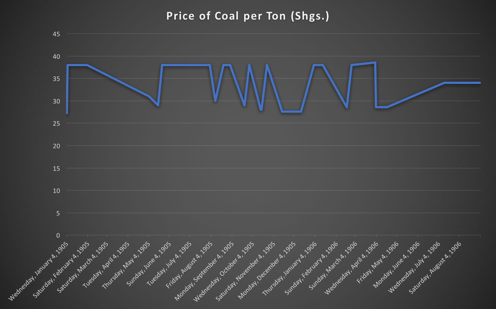
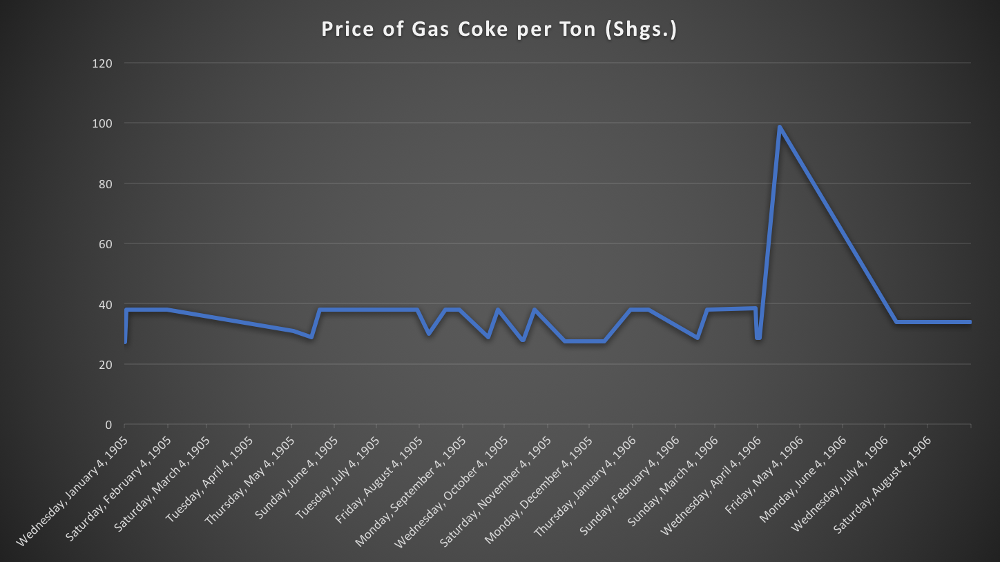

Whenever I ask my grandparents to tell stories about their childhoods, I place myself back in time to the early 1900s. History has always been fascinating to me simply because I picture everything as if it were occurring right in front of me. By entering the time machine of life, I indulge into the knowledge that the past has to offer. During the 1900s, the Egyptian Gazette was booming within the public-eye, with material ranging from traveling options, steamer passenger lists, and even the price of coal per ton. IT HAD EVERYTHING. If you needed to read a non-fictional murder story, the Gazette had it. This wide range of material is what made my serial question process more difficult than it should have been.
As soon as my instructor announced the project, I instantly had one thing in mind: politics. While encoding the issues in my assigned week, Monday, January 15th, 1906 to Saturday, January 20th, 1906, I would notice very interesting news stories regarding the nature of politics at the time. It was gritty and truthful, and honestly, because the paper had an intense focus on the ‘liberal-type’ political parties at the time, I strongly assumed that the paper had a liberal bias. Everything was fine and dandy until I realized that my political based serial question was not serial at all. In fact, it was extremely broad, and would confuse even the smartest historian in the world (well, maybe). So, I swallowed my pride, and developed an entire new question, on a subject matter that I thought was completely unrelated to politics, the coal industry. If your company had anything to do with the coal industry, chances are it was booming.
Gas coke and foundry coke, both a type of coal, hail from different origins. Gas coke is caught from the combustion process of gas retort. Foundry coal is special coal refined for using in blast furnaces. Both are important, and were the key components of any kind of steel creation at the time. If you traveled on a steamer throughout Europe at the time of the Egyptian Gazette, chances are you were riding on a vessel that found its origins from the precious fossil fuel. Coal was also a major player in the Industrial Revolution years before, so the product interested me. It interested me enough to develop the question: Has the price per ton of ‘Gas Coke’ coal displayed a rising trend from the beginning of 1905 to the beginning of 1906?
As for creating the XML search query that can be used to solve the serial question, I started simple. When working with XML, I noticed that the code is all one big tree of text. You start large, then narrow your search. An XML search query looks like this: //table[@xml:id="deg-ta-coal01"]//cell[contains(.,'Gas Coke')]/following-sibling::cell[1]. The first word, in this case, “table”, designates a search for a specific table within the text. For my serial question, the table id will take you to the table containing the prices of various coals per a ton. The next section of the query designates a specific search within the “cells” of the tables. The query designed to answer the serial question targets the cell containing ‘Gas Coke’. The last string of text finalizes the search, with locating the numerical data in the cell next to the cell containing ‘Gas Coke’. If all goes well, you should be able to instantaneously search for the price per ton of gas coke in every encoded issue of the Egyptian Gazette, from 1905 to 1906.


Any decent history paper is going to have illustrations and pictures to guide the audience on the rocky road of historical information. I wanted an image that would help answer the question for individuals who learn better with visual stimulation. So, a line graph was crafted, with the respected dates labeled on the x-axis, and the price of gas coke labeled on the y-axis. The data displayed on the graph visually represents the trends in the price of the coal. This is essential for the cross-referencing of data to further support any argument regarding the serial question. The price of gas coke throughout 1905 and 1906 was constantly changing, with the minimum prices per ton reaching a low of 27.3 Shgs., and the maximum prices per ton reaching 38.6 Shgs.
While analyzing the data, I wanted to find the reasoning behind the sudden dips in coal price. For instance, on August 2nd, 1905, the price dropped from 38 Shgs. to 30 Shgs. in the matter of a night! While encoding the Gazette, I noticed that on page seven of all the issues in my week, there was a detailed travel itinerary. The itinerary was meant to encourage tourism throughout Europe, and spark economies across the board. The itinerary frequently mentioned the use of a steamer ships to cross large bodies of water, and I knew that this was the needed support to answer the question. Could there be a correlation between steam lines, and the price of coal? A high demand for steamers, combined with a set supply, sparked a rise in the steamer ticket price. I also noticed that throughout the following months, new ship names would appear on the tables. This meant that the companies were producing more ships. More steamer ships, means more steal and power, thus sending a demand for coal along the way. Coal mining is a dirty job, and requires a large amount of man-power. So, in order to account for the demand in coal, companies needed to hire miners. A large number of heads to pay, means a higher price per ton of coal. An increase in the passenger lists also signified an increased use of steamer ships, thus further helping to explain the rising trend of coal prices.
In January of 1905, coal prices were at 27.3 Shgs. per ton, and by the end of the recorded coal data, in September of 1906, the prices were at a steady level of 34 Shgs. In the summer of 1906, the price per ton of coal began to gradually rise, which was unusual because there was an immediate history of drastic price changes. The coal market was stabilizing, which allowed the price per ton to stay consistent with the demand. With the rise in the price of gas coke per ton, the price of foundry coke began to follow the trend of increase. On September 3rd, 1906, the final recorded date of gas coke, foundry coke also found its high price of 40 Shgs. per ton. This was substantially higher than its low price of 33 Shgs. on September 4th, 1905. Essentially, the coal market was experiencing a trend of price increase, and gas coke was just the catalyst.
If it was not for my change in OCR software, from Cisdem to Finereader, and high quality microfilm stitching, I would not have had accurate paragraph and table information to research. With unrecognizable words recorded, distinguishable passenger lists, steam line lists, and coal prices would have been unobtainable. In the beginning of the semester the code language of XML was foreign to me. It was a never-ending string of text, that required more brainpower than using a word processor. Creating codes for divisions, headlines, and new paragraphs was nonsense to me. Little did I realize that XML would become my life for months to follow. After my first issue was completed, and a struggle through GitHub to turn the darn thing in was made, I became content with life. I could power through paragraphs, and code with unprecedented ease. For me as an individual, it was quality over quantity, so I relied on interesting material such as murder stories to fuel my motivation to code. There will never be a time when I am passionate about something, and decide to treat it with low importance. My slow process of quality, set me behind my peers who were more focused on the central idea of quantity.
The business of coal mining was an unpredictable market, whose prices rose primarily from a chain reaction of events, such as increased steam line use. In 1906 Alexandria, coal created its own demand, and the city of New Castle in South Wales was the mecca for gas and foundry coke. With an English presence in Alexandria, coal from England was the gold. English product was going to be used in Alexandria, and as far as the eye could see, because the sun never sets on the British Empire. Politics drove Egyptian society, and the monopoly of industries that existed, operated from lobbyist party interests. Coal was going to remain pricey, and from England. The manufacturing of goods depended on it! Thanks to a targeted serial question, I was able to immerse myself within the work. XML, OCR, and query, is now a language I speak.